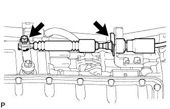
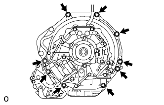
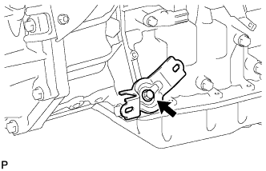

АВТОМАТИЧЕСКАЯ ТРАНСМИССИЯ В СБОРЕ (для моделей с 1KD-FTV) > СНЯТИЕ |
| 1. ОТСОЕДИНИТЕ ПРОВОД ОТ ОТРИЦАТЕЛЬНОГО ВЫВОДА АККУМУЛЯТОРНОЙ БАТАРЕИ |
| 2. СНИМИТЕ ЗАЩИТУ КАРТЕРА ДВИГАТЕЛЯ № 1 В СБОРЕ |
Выверните 4 болта и снимите защиту картера двигателя № 1.
| 3. СНИМИТЕ ЗАДНЮЮ ЗАЩИТУ КАРТЕРА ДВИГАТЕЛЯ В СБОРЕ |
Выверните 4 болта и снимите заднюю защиту картера двигателя.
| 4. СНИМИТЕ УПЛОТНЕНИЕ ФАРТУКА ПРАВОГО ПЕРЕДНЕГО КРЫЛА |
С помощью съемника фиксаторов снимите 4 фиксатора и уплотнение фартука правого переднего крыла.
| 5. СНИМИТЕ УПЛОТНЕНИЕ № 1 МЕЖДУ ФАРТУКОМ ПРАВОГО ПЕРЕДНЕГО КРЫЛА И РАМОЙ |
С помощью съемника фиксаторов освободите 5 фиксаторов и снимите уплотнение между фартуком правого переднего крыла и рамой № 1.
| 6. СЛЕЙТЕ ЖИДКОСТЬ ДЛЯ АВТОМАТИЧЕСКОЙ ТРАНСМИССИИ |
Снимите пробку сливного отверстия и прокладку, и слейте трансмиссионную жидкость.
Установите новую прокладку и пробку сливного отверстия.
| 7. СНИМИТЕ НИЖНИЙ ЗАЩИТНЫЙ КОЖУХ КАРТЕРА РАЗДАТОЧНОЙ КОРОБКИ |
Выверните 4 болта и снимите нижний защитный кожух картера раздаточной коробки.
| 8. СНИМИТЕ ПЕРЕДНИЙ КАРДАННЫЙ ВАЛ В СБОРЕ |
| 9. СНИМИТЕ КАРДАННЫЙ ВАЛ В СБОРЕ |
| 10. СНИМИТЕ ПРИЕМНУЮ ТРУБУ В СБОРЕ |
| 11. ОТСОЕДИНИТЕ ТРОС МЕХАНИЗМА ПЕРЕКЛЮЧЕНИЯ ПЕРЕДАЧ В СБОРЕ |
|  |
Отверните гайку, освободите фиксатор и отсоедините трос механизма переключения передач от трансмиссии.
| 12. ОТСОЕДИНИТЕ ВПУСКНОЙ ПАТРУБОК МАСЛЯНОГО РАДИАТОРА № 1 И ВЫПУСКНОЙ ПАТРУБОК МАСЛЯНОГО РАДИАТОРА № 1 |
Выверните 3 болта и разомкните 3 зажима патрубков масляного радиатора.
С помощью разрезной головки отсоедините впускной патрубок масляного радиатора № 1 и выпускной патрубок масляного радиатора № 1 от штуцеров патрубков масляного радиатора.
| 13. СНИМИТЕ СТАРТЕР В СБОРЕ |
Для 2,2 кВт:
Снимите стартер (Нажмите здесь).
Для моделей мощностью 2,7 кВт:
Снимите стартер (Нажмите здесь).
Для 3,0 кВт:
Снимите стартер (Нажмите здесь).
| 14. СНИМИТЕ ТЕПЛО- И ШУМОИЗОЛИРУЮЩИЙ ЭКРАН МАСЛЯНОГО ПОДДОНА |
Выверните 2 болта и снимите тепло- и шумоизолирующий экран масляного поддона.
| 15. ПОДДОМКРАТЬТЕ АВТОМАТИЧЕСКУЮ ТРАНСМИССИЮ В СБОРЕ |
 |
Поддомкратьте трансмиссию телескопическим гидравлическим домкратом. Приподнимите трансмиссию над поперечиной.
| 16. СНИМИТЕ ЛЕВЫЙ И ПРАВЫЙ КРОНШТЕЙНЫ ЭЛЕМЕНТА ПЕРЕДНЕЙ ПОДВЕСКИ |
 |
Выверните 8 болтов и снимите левый и правый кронштейны элемента передней подвески.
| 17. СНИМИТЕ ПОПЕРЕЧИНУ РАМЫ № 3 В СБОРЕ |
 |
Выверните 4 болта из подушки задней опоры двигателя.
 |
Отверните 4 гайки и снимите 4 болта и поперечину рамы.
| 18. СНИМИТЕ ЗАДНЮЮ ПОДУШКУ ОПОРЫ ДВИГАТЕЛЯ № 1 |
 |
Выверните 4 болта и снимите подушку задней опоры двигателя с трансмиссии.
| 19. ВЫВЕРНИТЕ УСТАНОВОЧНЫЙ БОЛТ ГИДРОТРАНСФОРМАТОРА И ВЕДУЩЕГО ДИСКА |
 |
Проверните коленчатый вал, чтобы обеспечить доступ к 6 болтам, и, удерживая ключом болт шкива коленчатого вала, выверните каждый из болтов.
| 20. ОТСОЕДИНИТЕ ЖГУТ ПРОВОДОВ И РАЗЪЕМ |
 |
Наклоните трансмиссию вниз.
для моделей с DPF:
Отсоедините разъем датчика положения паркинга/нейтрали, разъем жгута электропроводки трансмиссии, 2 разъема датчиков частоты вращения, разъем дифференциального датчика давления и боковой разъем системы управления раздаточной коробкой.
Освободите 10 зажимов жгута проводов и отсоедините жгут проводов.
для моделей без DPF:
Отсоедините разъем датчика положения паркинга/нейтрали, разъем жгута электропроводки трансмиссии, 2 разъема датчиков частоты вращения и боковой разъем системы управления раздаточной коробкой.

Освободите 7 зажимов жгута проводов и отсоедините жгут проводов.
| 21. СНИМИТЕ АВТОМАТИЧЕСКУЮ ТРАНСМИССИЮ В СБОРЕ |
|  |
Выверните 9 болтов и снимите автоматическую трансмиссию.
| 22. СНИМИТЕ КРОНШТЕЙН ДАТЧИКА № 1 (для моделей с DPF) |
Освободите зажим шланга сапуна раздаточной коробки.
Выверните болт, отверните гайку и снимите кронштейн датчика № 1.
| 23. СНИМИТЕ КРОНШТЕЙН ЗАЖИМА ЖГУТА ПРОВОДОВ (для моделей с DPF) |
|  |
Выверните болт и снимите кронштейн зажима жгута проводов.
| 24. СНИМИТЕ РАЗДАТОЧНУЮ КОРОБКУ В СБОРЕ |
| 25. СНИМИТЕ КРОНШТЕЙН ТРОСА МЕХАНИЗМА ПЕРЕКЛЮЧЕНИЯ ПЕРЕДАЧ № 1 |
 |
Выверните 2 болта и снимите кронштейн троса механизма переключения передач.
| 26. СНИМИТЕ ГИДРОТРАНСФОРМАТОР В СБОРЕ |
| 27. ПРОВЕРЬТЕ ГИДРОТРАНСФОРМАТОР В СБОРЕ |